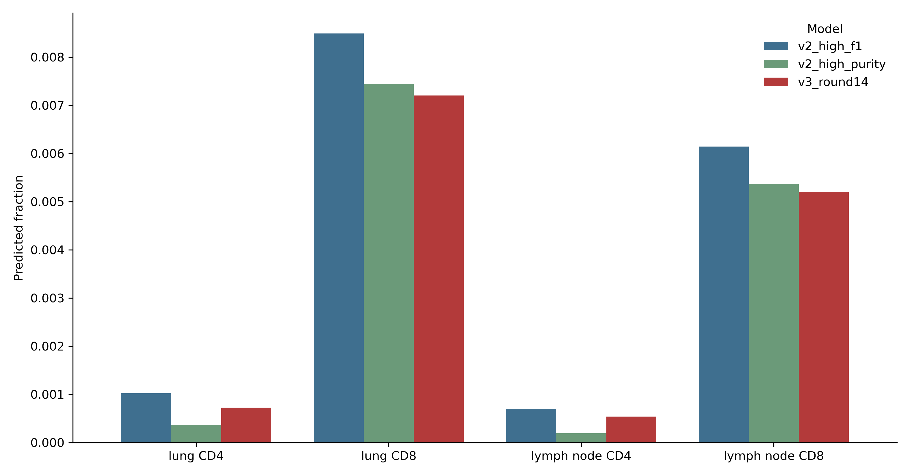
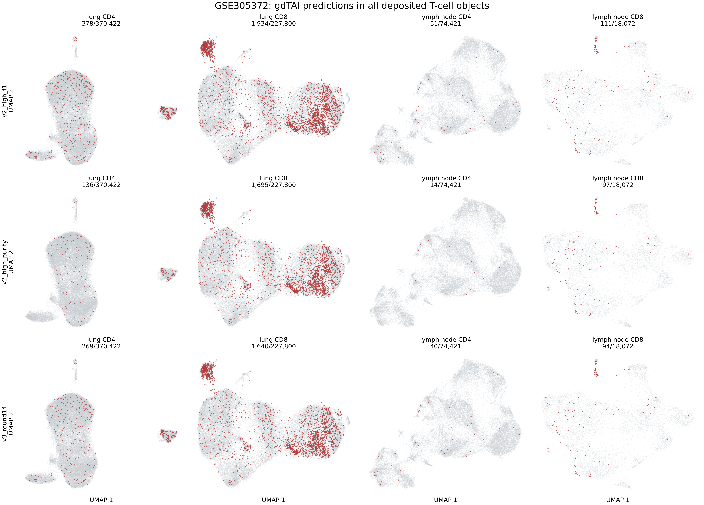
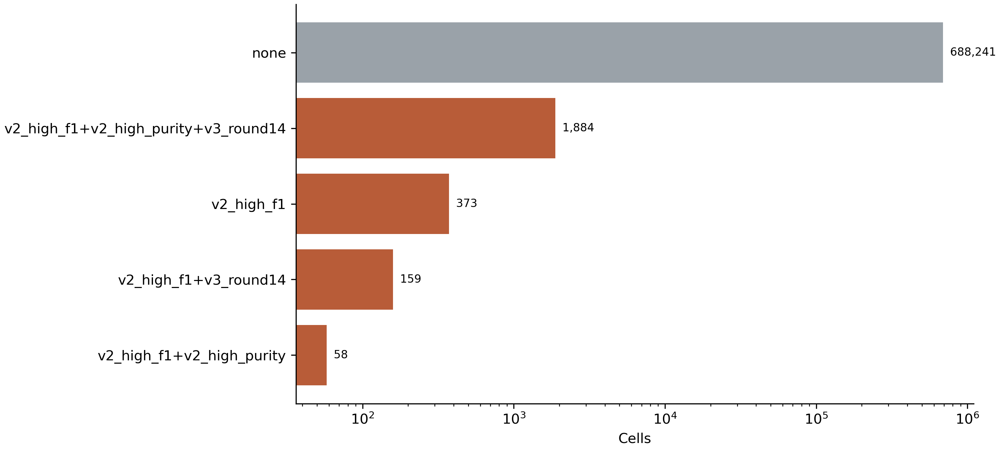
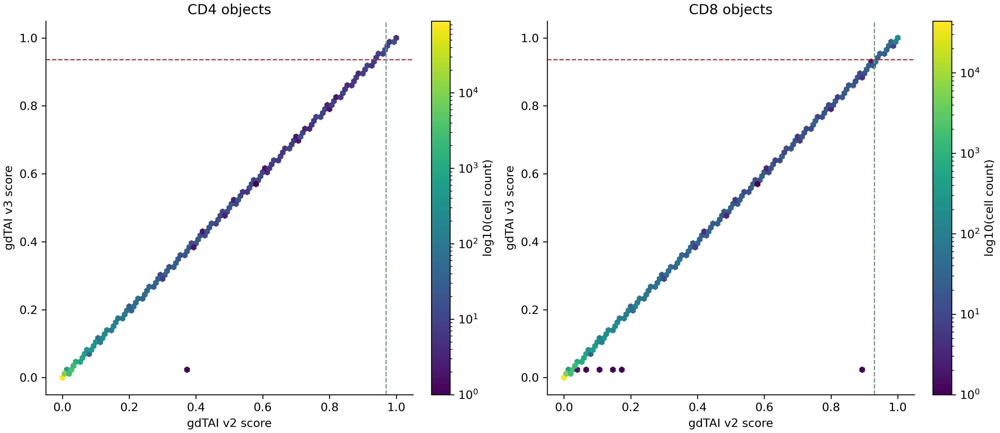
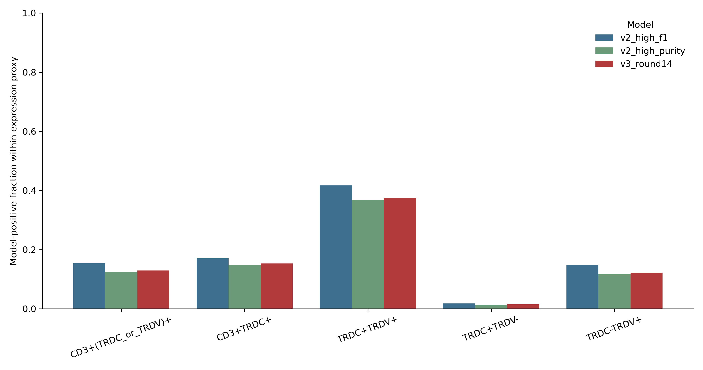

cite.cell.type.tag is retained only as audit metadata and never used to select cells.Denominator audit
The deposited lung CD4 object has 370,422 cells, whereas the manuscript reports 370,233. The difference is exactly 189 cells in cluster IDs 6-8, which are not present in the authors' finalized phenotype map; no model called any of those 189 cells. They remain included here under the all-deposited-cells rule. Both lymph-node objects are partial deposits relative to the manuscript cohort.
| object_id | deposited_cells_analyzed | mapped_author_cluster_cells | manuscript_reported_cells | deposited_minus_manuscript | deposited_coverage_fraction | scope_note |
|---|---|---|---|---|---|---|
| lung_CD4 | 370422 | 370233 | 370233 | 189 | 1.0005 | 189 deposited cells are in unmapped author cluster IDs 6-8 |
| lung_CD8 | 227800 | 227800 | 227800 | 0 | 1.0000 | deposited object matches the manuscript count |
| lymph_node_CD4 | 74421 | 74421 | 198890 | -124469 | 0.3742 | GEO object is a partial lymph-node deposit |
| lymph_node_CD8 | 18072 | 18072 | 129737 | -111665 | 0.1393 | GEO object is a partial lymph-node deposit |
The separate DICE-TCR blood CD4 CSV contains 1,143,667 TCR/metadata rows and 35 columns, but no raw transcriptome matrix or whole-library count denominator. It is therefore not eligible for gdTAI expression inference and is not part of the 690,715-cell denominator.
Models and normalization
Both releases were applied to the same raw RNA counts. Each model gene was transformed as log1p(raw count * 10,000 / whole-transcriptome raw-count total). V2 high-F1 uses its fixed threshold 0.906359. V2 high-purity uses the released annotation-specific policy: 0.97 for CD4, 0.93 for CD8, and no calls from author-defined Treg clusters. V3 is the checksum-pinned promoted Round 14 model at 0.936.
V2 SHA256: c7f6e7d1d1c0c8de9e7abbaa7c5b70c1070b43c964ccdb94e414bc5278e13c3e
V3 SHA256: 16dedc0081da9b8487887341232bcf8c9c9403dd3bbd72e04cab43d4cd7b2e09
Overall and object-level calls
| model | n_cells | n_predicted | predicted_fraction | predicted_fraction_ci_low | predicted_fraction_ci_high | median_score | p95_score |
|---|---|---|---|---|---|---|---|
| v2_high_f1 | 690715 | 2474 | 0.0036 | 0.0034 | 0.0037 | 0.0002 | 0.0922 |
| v2_high_purity | 690715 | 1942 | 0.0028 | 0.0027 | 0.0029 | 0.0002 | 0.0922 |
| v3_round14 | 690715 | 2043 | 0.0030 | 0.0028 | 0.0031 | 0.0002 | 0.0921 |
| object_id | source_compartment | author_lineage | model | n_cells | n_predicted | predicted_fraction | predicted_fraction_ci_low | predicted_fraction_ci_high |
|---|---|---|---|---|---|---|---|---|
| lung_CD4 | lung | CD4 | v2_high_f1 | 370422 | 378 | 0.0010 | 0.0009 | 0.0011 |
| lung_CD4 | lung | CD4 | v2_high_purity | 370422 | 136 | 0.0004 | 0.0003 | 0.0004 |
| lung_CD4 | lung | CD4 | v3_round14 | 370422 | 269 | 0.0007 | 0.0006 | 0.0008 |
| lung_CD8 | lung | CD8 | v2_high_f1 | 227800 | 1934 | 0.0085 | 0.0081 | 0.0089 |
| lung_CD8 | lung | CD8 | v2_high_purity | 227800 | 1695 | 0.0074 | 0.0071 | 0.0078 |
| lung_CD8 | lung | CD8 | v3_round14 | 227800 | 1640 | 0.0072 | 0.0069 | 0.0076 |
| lymph_node_CD4 | lymph_node | CD4 | v2_high_f1 | 74421 | 51 | 0.0007 | 0.0005 | 0.0009 |
| lymph_node_CD4 | lymph_node | CD4 | v2_high_purity | 74421 | 14 | 0.0002 | 0.0001 | 0.0003 |
| lymph_node_CD4 | lymph_node | CD4 | v3_round14 | 74421 | 40 | 0.0005 | 0.0004 | 0.0007 |
| lymph_node_CD8 | lymph_node | CD8 | v2_high_f1 | 18072 | 111 | 0.0061 | 0.0051 | 0.0074 |
| lymph_node_CD8 | lymph_node | CD8 | v2_high_purity | 18072 | 97 | 0.0054 | 0.0044 | 0.0065 |
| lymph_node_CD8 | lymph_node | CD8 | v3_round14 | 18072 | 94 | 0.0052 | 0.0043 | 0.0064 |


Author phenotype clusters
Cluster resolutions and labels follow the authors' public figure script: RNA_snn_res.0.2 for lung and RNA_snn_res.0.3 for lymph node. These labels are also the source for the V2 high-purity Treg exclusion.
| object_id | author_cluster_id | author_cluster | model | n_cells | n_predicted | predicted_fraction |
|---|---|---|---|---|---|---|
| lung_CD4 | 0 | TRM | v2_high_f1 | 200726 | 163 | 0.0008 |
| lung_CD4 | 0 | TRM | v2_high_purity | 200726 | 64 | 0.0003 |
| lung_CD4 | 0 | TRM | v3_round14 | 200726 | 123 | 0.0006 |
| lung_CD4 | 1 | TCM | v2_high_f1 | 113903 | 77 | 0.0007 |
| lung_CD4 | 1 | TCM | v2_high_purity | 113903 | 28 | 0.0002 |
| lung_CD4 | 1 | TCM | v3_round14 | 113903 | 52 | 0.0005 |
| lung_CD4 | 2 | CD4-CTL | v2_high_f1 | 22048 | 101 | 0.0046 |
| lung_CD4 | 2 | CD4-CTL | v2_high_purity | 22048 | 41 | 0.0019 |
| lung_CD4 | 2 | CD4-CTL | v3_round14 | 22048 | 71 | 0.0032 |
| lung_CD4 | 3 | TREG | v2_high_f1 | 21818 | 26 | 0.0012 |
| lung_CD4 | 3 | TREG | v2_high_purity | 21818 | 0 | 0.0000 |
| lung_CD4 | 3 | TREG | v3_round14 | 21818 | 15 | 0.0007 |
| lung_CD4 | 4 | TFH | v2_high_f1 | 7165 | 5 | 0.0007 |
| lung_CD4 | 4 | TFH | v2_high_purity | 7165 | 1 | 0.0001 |
| lung_CD4 | 4 | TFH | v3_round14 | 7165 | 4 | 0.0006 |
| lung_CD4 | 5 | Prolif | v2_high_f1 | 4573 | 6 | 0.0013 |
| lung_CD4 | 5 | Prolif | v2_high_purity | 4573 | 2 | 0.0004 |
| lung_CD4 | 5 | Prolif | v3_round14 | 4573 | 4 | 0.0009 |
| lung_CD4 | 6 | unassigned | v2_high_f1 | 185 | 0 | 0.0000 |
| lung_CD4 | 6 | unassigned | v2_high_purity | 185 | 0 | 0.0000 |
| lung_CD4 | 6 | unassigned | v3_round14 | 185 | 0 | 0.0000 |
| lung_CD4 | 7 | unassigned | v2_high_f1 | 2 | 0 | 0.0000 |
| lung_CD4 | 7 | unassigned | v2_high_purity | 2 | 0 | 0.0000 |
| lung_CD4 | 7 | unassigned | v3_round14 | 2 | 0 | 0.0000 |
| lung_CD4 | 8 | unassigned | v2_high_f1 | 2 | 0 | 0.0000 |
| lung_CD4 | 8 | unassigned | v2_high_purity | 2 | 0 | 0.0000 |
| lung_CD4 | 8 | unassigned | v3_round14 | 2 | 0 | 0.0000 |
| lung_CD8 | 0 | TRM | v2_high_f1 | 77490 | 206 | 0.0027 |
| lung_CD8 | 0 | TRM | v2_high_purity | 77490 | 176 | 0.0023 |
| lung_CD8 | 0 | TRM | v3_round14 | 77490 | 170 | 0.0022 |
| lung_CD8 | 1 | TEM | v2_high_f1 | 71943 | 972 | 0.0135 |
| lung_CD8 | 1 | TEM | v2_high_purity | 71943 | 854 | 0.0119 |
| lung_CD8 | 1 | TEM | v3_round14 | 71943 | 825 | 0.0115 |
| lung_CD8 | 2 | GZMKhi | v2_high_f1 | 43197 | 350 | 0.0081 |
| lung_CD8 | 2 | GZMKhi | v2_high_purity | 43197 | 305 | 0.0071 |
| lung_CD8 | 2 | GZMKhi | v3_round14 | 43197 | 300 | 0.0069 |
| lung_CD8 | 3 | TCM | v2_high_f1 | 19484 | 27 | 0.0014 |
| lung_CD8 | 3 | TCM | v2_high_purity | 19484 | 22 | 0.0011 |
| lung_CD8 | 3 | TCM | v3_round14 | 19484 | 21 | 0.0011 |
| lung_CD8 | 4 | NKG2Cpos | v2_high_f1 | 8803 | 330 | 0.0375 |
| lung_CD8 | 4 | NKG2Cpos | v2_high_purity | 8803 | 298 | 0.0339 |
| lung_CD8 | 4 | NKG2Cpos | v3_round14 | 8803 | 285 | 0.0324 |
| lung_CD8 | 5 | MAIT | v2_high_f1 | 4585 | 35 | 0.0076 |
| lung_CD8 | 5 | MAIT | v2_high_purity | 4585 | 29 | 0.0063 |
| lung_CD8 | 5 | MAIT | v3_round14 | 4585 | 28 | 0.0061 |
| lung_CD8 | 6 | Prolif | v2_high_f1 | 2298 | 14 | 0.0061 |
| lung_CD8 | 6 | Prolif | v2_high_purity | 2298 | 11 | 0.0048 |
| lung_CD8 | 6 | Prolif | v3_round14 | 2298 | 11 | 0.0048 |
| lymph_node_CD4 | 0 | TN | v2_high_f1 | 17362 | 11 | 0.0006 |
| lymph_node_CD4 | 0 | TN | v2_high_purity | 17362 | 5 | 0.0003 |
| lymph_node_CD4 | 0 | TN | v3_round14 | 17362 | 9 | 0.0005 |
| lymph_node_CD4 | 1 | TI | v2_high_f1 | 14172 | 7 | 0.0005 |
| lymph_node_CD4 | 1 | TI | v2_high_purity | 14172 | 4 | 0.0003 |
| lymph_node_CD4 | 1 | TI | v3_round14 | 14172 | 5 | 0.0004 |
| lymph_node_CD4 | 2 | TCM | v2_high_f1 | 12270 | 3 | 0.0002 |
| lymph_node_CD4 | 2 | TCM | v2_high_purity | 12270 | 0 | 0.0000 |
| lymph_node_CD4 | 2 | TCM | v3_round14 | 12270 | 2 | 0.0002 |
| lymph_node_CD4 | 3 | TREG | v2_high_f1 | 11846 | 15 | 0.0013 |
| lymph_node_CD4 | 3 | TREG | v2_high_purity | 11846 | 0 | 0.0000 |
| lymph_node_CD4 | 3 | TREG | v3_round14 | 11846 | 11 | 0.0009 |
| lymph_node_CD4 | 4 | TREG | v2_high_f1 | 11551 | 7 | 0.0006 |
| lymph_node_CD4 | 4 | TREG | v2_high_purity | 11551 | 0 | 0.0000 |
| lymph_node_CD4 | 4 | TREG | v3_round14 | 11551 | 7 | 0.0006 |
| lymph_node_CD4 | 5 | IFNR | v2_high_f1 | 3059 | 4 | 0.0013 |
| lymph_node_CD4 | 5 | IFNR | v2_high_purity | 3059 | 2 | 0.0007 |
| lymph_node_CD4 | 5 | IFNR | v3_round14 | 3059 | 2 | 0.0007 |
| lymph_node_CD4 | 6 | TFH | v2_high_f1 | 2942 | 4 | 0.0014 |
| lymph_node_CD4 | 6 | TFH | v2_high_purity | 2942 | 3 | 0.0010 |
| lymph_node_CD4 | 6 | TFH | v3_round14 | 2942 | 4 | 0.0014 |
| lymph_node_CD4 | 7 | TRM | v2_high_f1 | 908 | 0 | 0.0000 |
| lymph_node_CD4 | 7 | TRM | v2_high_purity | 908 | 0 | 0.0000 |
| lymph_node_CD4 | 7 | TRM | v3_round14 | 908 | 0 | 0.0000 |
| lymph_node_CD4 | 8 | TFH | v2_high_f1 | 311 | 0 | 0.0000 |
| lymph_node_CD4 | 8 | TFH | v2_high_purity | 311 | 0 | 0.0000 |
| lymph_node_CD4 | 8 | TFH | v3_round14 | 311 | 0 | 0.0000 |
| lymph_node_CD8 | 0 | GZMKhi | v2_high_f1 | 6259 | 41 | 0.0066 |
| lymph_node_CD8 | 0 | GZMKhi | v2_high_purity | 6259 | 36 | 0.0058 |
| lymph_node_CD8 | 0 | GZMKhi | v3_round14 | 6259 | 35 | 0.0056 |
| lymph_node_CD8 | 1 | TI | v2_high_f1 | 3920 | 26 | 0.0066 |
| lymph_node_CD8 | 1 | TI | v2_high_purity | 3920 | 23 | 0.0059 |
| lymph_node_CD8 | 1 | TI | v3_round14 | 3920 | 23 | 0.0059 |
| lymph_node_CD8 | 2 | TCM | v2_high_f1 | 3749 | 12 | 0.0032 |
| lymph_node_CD8 | 2 | TCM | v2_high_purity | 3749 | 9 | 0.0024 |
| lymph_node_CD8 | 2 | TCM | v3_round14 | 3749 | 9 | 0.0024 |
| lymph_node_CD8 | 3 | TN | v2_high_f1 | 1291 | 2 | 0.0015 |
| lymph_node_CD8 | 3 | TN | v2_high_purity | 1291 | 1 | 0.0008 |
| lymph_node_CD8 | 3 | TN | v3_round14 | 1291 | 1 | 0.0008 |
| lymph_node_CD8 | 4 | IFNR | v2_high_f1 | 1119 | 3 | 0.0027 |
| lymph_node_CD8 | 4 | IFNR | v2_high_purity | 1119 | 1 | 0.0009 |
| lymph_node_CD8 | 4 | IFNR | v3_round14 | 1119 | 1 | 0.0009 |
| lymph_node_CD8 | 5 | TRM | v2_high_f1 | 1007 | 1 | 0.0010 |
| lymph_node_CD8 | 5 | TRM | v2_high_purity | 1007 | 1 | 0.0010 |
| lymph_node_CD8 | 5 | TRM | v3_round14 | 1007 | 1 | 0.0010 |
| lymph_node_CD8 | 6 | TACT | v2_high_f1 | 374 | 0 | 0.0000 |
| lymph_node_CD8 | 6 | TACT | v2_high_purity | 374 | 0 | 0.0000 |
| lymph_node_CD8 | 6 | TACT | v3_round14 | 374 | 0 | 0.0000 |
| lymph_node_CD8 | 7 | MAIT | v2_high_f1 | 282 | 26 | 0.0922 |
| lymph_node_CD8 | 7 | MAIT | v2_high_purity | 282 | 26 | 0.0922 |
| lymph_node_CD8 | 7 | MAIT | v3_round14 | 282 | 24 | 0.0851 |
| lymph_node_CD8 | 8 | TEM | v2_high_f1 | 71 | 0 | 0.0000 |
| lymph_node_CD8 | 8 | TEM | v2_high_purity | 71 | 0 | 0.0000 |
| lymph_node_CD8 | 8 | TEM | v3_round14 | 71 | 0 | 0.0000 |
Model agreement
| model_a | model_b | a_positive | b_positive | both_positive | a_only | b_only | jaccard |
|---|---|---|---|---|---|---|---|
| v2_high_f1 | v2_high_purity | 2474 | 1942 | 1942 | 532 | 0 | 0.7850 |
| v2_high_f1 | v3_round14 | 2474 | 2043 | 2043 | 431 | 0 | 0.8258 |
| v2_high_purity | v3_round14 | 1942 | 2043 | 1884 | 58 | 159 | 0.8967 |
| prediction_pattern | n_cells | fraction_of_all_cells |
|---|---|---|
| none | 688241 | 0.9964 |
| v2_high_f1+v2_high_purity+v3_round14 | 1884 | 0.0027 |
| v2_high_f1 | 373 | 0.0005 |
| v2_high_f1+v3_round14 | 159 | 0.0002 |
| v2_high_f1+v2_high_purity | 58 | 0.0001 |


TCR-expression audit
CD3+ means at least one raw UMI in CD3D, CD3E, or CD3G. Gene-expression categories are dropout-sensitive proxies and are not used as ground truth.
| expression_proxy | model | n_reference_cells | n_model_positive | model_capture_fraction |
|---|---|---|---|---|
| CD3+TRDC+ | v2_high_f1 | 3482 | 594 | 0.1706 |
| CD3+TRDC+ | v2_high_purity | 3482 | 517 | 0.1485 |
| CD3+TRDC+ | v3_round14 | 3482 | 533 | 0.1531 |
| CD3+(TRDC_or_TRDV)+ | v2_high_f1 | 14387 | 2212 | 0.1537 |
| CD3+(TRDC_or_TRDV)+ | v2_high_purity | 14387 | 1799 | 0.1250 |
| CD3+(TRDC_or_TRDV)+ | v3_round14 | 14387 | 1867 | 0.1298 |
| TRDC+TRDV+ | v2_high_f1 | 1333 | 556 | 0.4171 |
| TRDC+TRDV+ | v2_high_purity | 1333 | 491 | 0.3683 |
| TRDC+TRDV+ | v3_round14 | 1333 | 501 | 0.3758 |
| TRDC+TRDV- | v2_high_f1 | 2174 | 39 | 0.0179 |
| TRDC+TRDV- | v2_high_purity | 2174 | 27 | 0.0124 |
| TRDC+TRDV- | v3_round14 | 2174 | 33 | 0.0152 |
| TRDC-TRDV+ | v2_high_f1 | 11027 | 1632 | 0.1480 |
| TRDC-TRDV+ | v2_high_purity | 11027 | 1292 | 0.1172 |
| TRDC-TRDV+ | v3_round14 | 11027 | 1347 | 0.1222 |

| object_id | tcr_gene_quadrant | model | n_cells | n_predicted | predicted_fraction |
|---|---|---|---|---|---|
| lung_CD4 | TRDC+TRDV+ | v2_high_f1 | 186 | 51 | 0.2742 |
| lung_CD4 | TRDC+TRDV+ | v2_high_purity | 186 | 24 | 0.1290 |
| lung_CD4 | TRDC+TRDV+ | v3_round14 | 186 | 43 | 0.2312 |
| lung_CD4 | TRDC+TRDV- | v2_high_f1 | 1000 | 15 | 0.0150 |
| lung_CD4 | TRDC+TRDV- | v2_high_purity | 1000 | 7 | 0.0070 |
| lung_CD4 | TRDC+TRDV- | v3_round14 | 1000 | 12 | 0.0120 |
| lung_CD4 | TRDC-TRDV+ | v2_high_f1 | 3675 | 225 | 0.0612 |
| lung_CD4 | TRDC-TRDV+ | v2_high_purity | 3675 | 80 | 0.0218 |
| lung_CD4 | TRDC-TRDV+ | v3_round14 | 3675 | 156 | 0.0424 |
| lung_CD4 | TRDC-TRDV- | v2_high_f1 | 365561 | 87 | 0.0002 |
| lung_CD4 | TRDC-TRDV- | v2_high_purity | 365561 | 25 | 0.0001 |
| lung_CD4 | TRDC-TRDV- | v3_round14 | 365561 | 58 | 0.0002 |
| lung_CD8 | TRDC+TRDV+ | v2_high_f1 | 1017 | 465 | 0.4572 |
| lung_CD8 | TRDC+TRDV+ | v2_high_purity | 1017 | 434 | 0.4267 |
| lung_CD8 | TRDC+TRDV+ | v3_round14 | 1017 | 422 | 0.4149 |
| lung_CD8 | TRDC+TRDV- | v2_high_f1 | 560 | 17 | 0.0304 |
| lung_CD8 | TRDC+TRDV- | v2_high_purity | 560 | 16 | 0.0286 |
| lung_CD8 | TRDC+TRDV- | v3_round14 | 560 | 14 | 0.0250 |
| lung_CD8 | TRDC-TRDV+ | v2_high_f1 | 5836 | 1300 | 0.2228 |
| lung_CD8 | TRDC-TRDV+ | v2_high_purity | 5836 | 1142 | 0.1957 |
| lung_CD8 | TRDC-TRDV+ | v3_round14 | 5836 | 1107 | 0.1897 |
| lung_CD8 | TRDC-TRDV- | v2_high_f1 | 220387 | 152 | 0.0007 |
| lung_CD8 | TRDC-TRDV- | v2_high_purity | 220387 | 103 | 0.0005 |
| lung_CD8 | TRDC-TRDV- | v3_round14 | 220387 | 97 | 0.0004 |
| lymph_node_CD4 | TRDC+TRDV+ | v2_high_f1 | 43 | 9 | 0.2093 |
| lymph_node_CD4 | TRDC+TRDV+ | v2_high_purity | 43 | 4 | 0.0930 |
| lymph_node_CD4 | TRDC+TRDV+ | v3_round14 | 43 | 8 | 0.1860 |
| lymph_node_CD4 | TRDC+TRDV- | v2_high_f1 | 486 | 3 | 0.0062 |
| lymph_node_CD4 | TRDC+TRDV- | v2_high_purity | 486 | 0 | 0.0000 |
| lymph_node_CD4 | TRDC+TRDV- | v3_round14 | 486 | 3 | 0.0062 |
| lymph_node_CD4 | TRDC-TRDV+ | v2_high_f1 | 1105 | 35 | 0.0317 |
| lymph_node_CD4 | TRDC-TRDV+ | v2_high_purity | 1105 | 9 | 0.0081 |
| lymph_node_CD4 | TRDC-TRDV+ | v3_round14 | 1105 | 25 | 0.0226 |
| lymph_node_CD4 | TRDC-TRDV- | v2_high_f1 | 72787 | 4 | 0.0001 |
| lymph_node_CD4 | TRDC-TRDV- | v2_high_purity | 72787 | 1 | 0.0000 |
| lymph_node_CD4 | TRDC-TRDV- | v3_round14 | 72787 | 4 | 0.0001 |
| lymph_node_CD8 | TRDC+TRDV+ | v2_high_f1 | 87 | 31 | 0.3563 |
| lymph_node_CD8 | TRDC+TRDV+ | v2_high_purity | 87 | 29 | 0.3333 |
| lymph_node_CD8 | TRDC+TRDV+ | v3_round14 | 87 | 28 | 0.3218 |
| lymph_node_CD8 | TRDC+TRDV- | v2_high_f1 | 128 | 4 | 0.0312 |
| lymph_node_CD8 | TRDC+TRDV- | v2_high_purity | 128 | 4 | 0.0312 |
| lymph_node_CD8 | TRDC+TRDV- | v3_round14 | 128 | 4 | 0.0312 |
| lymph_node_CD8 | TRDC-TRDV+ | v2_high_f1 | 411 | 72 | 0.1752 |
| lymph_node_CD8 | TRDC-TRDV+ | v2_high_purity | 411 | 61 | 0.1484 |
| lymph_node_CD8 | TRDC-TRDV+ | v3_round14 | 411 | 59 | 0.1436 |
| lymph_node_CD8 | TRDC-TRDV- | v2_high_f1 | 17446 | 4 | 0.0002 |
| lymph_node_CD8 | TRDC-TRDV- | v2_high_purity | 17446 | 3 | 0.0002 |
| lymph_node_CD8 | TRDC-TRDV- | v3_round14 | 17446 | 3 | 0.0002 |
TRA/TRB conflict screening
| model | paired_TRA_TRB_cells | model_positive_paired_TRA_TRB | conflict_screening_fraction |
|---|---|---|---|
| v2_high_f1 | 533411 | 923 | 0.0017 |
| v2_high_purity | 533411 | 687 | 0.0013 |
| v3_round14 | 533411 | 733 | 0.0014 |
CITE-tag audit
CITE tags are shown only to expose which cells were previously lost. They do not determine inclusion or prediction thresholds in this corrected analysis.
| object_id | cite.cell.type.tag | model | n_cells | n_predicted | predicted_fraction |
|---|---|---|---|---|---|
| lung_CD4 | CD4 | v2_high_f1 | 130116 | 187 | 0.0014 |
| lung_CD4 | CD4 | v2_high_purity | 130116 | 77 | 0.0006 |
| lung_CD4 | CD4 | v3_round14 | 130116 | 137 | 0.0011 |
| lung_CD4 | CD8A | v2_high_f1 | 6793 | 15 | 0.0022 |
| lung_CD4 | CD8A | v2_high_purity | 6793 | 5 | 0.0007 |
| lung_CD4 | CD8A | v3_round14 | 6793 | 12 | 0.0018 |
| lung_CD4 | Doublet | v2_high_f1 | 16744 | 23 | 0.0014 |
| lung_CD4 | Doublet | v2_high_purity | 16744 | 8 | 0.0005 |
| lung_CD4 | Doublet | v3_round14 | 16744 | 17 | 0.0010 |
| lung_CD4 | Negative | v2_high_f1 | 5346 | 2 | 0.0004 |
| lung_CD4 | Negative | v2_high_purity | 5346 | 0 | 0.0000 |
| lung_CD4 | Negative | v3_round14 | 5346 | 0 | 0.0000 |
| lung_CD4 | v2_high_f1 | 211423 | 151 | 0.0007 | |
| lung_CD4 | v2_high_purity | 211423 | 46 | 0.0002 | |
| lung_CD4 | v3_round14 | 211423 | 103 | 0.0005 | |
| lung_CD8 | CD4 | v2_high_f1 | 4441 | 153 | 0.0345 |
| lung_CD8 | CD4 | v2_high_purity | 4441 | 136 | 0.0306 |
| lung_CD8 | CD4 | v3_round14 | 4441 | 129 | 0.0290 |
| lung_CD8 | CD8A | v2_high_f1 | 143184 | 749 | 0.0052 |
| lung_CD8 | CD8A | v2_high_purity | 143184 | 632 | 0.0044 |
| lung_CD8 | CD8A | v3_round14 | 143184 | 608 | 0.0042 |
| lung_CD8 | Doublet | v2_high_f1 | 14873 | 161 | 0.0108 |
| lung_CD8 | Doublet | v2_high_purity | 14873 | 142 | 0.0095 |
| lung_CD8 | Doublet | v3_round14 | 14873 | 136 | 0.0091 |
| lung_CD8 | Negative | v2_high_f1 | 27265 | 162 | 0.0059 |
| lung_CD8 | Negative | v2_high_purity | 27265 | 145 | 0.0053 |
| lung_CD8 | Negative | v3_round14 | 27265 | 142 | 0.0052 |
| lung_CD8 | v2_high_f1 | 38037 | 709 | 0.0186 | |
| lung_CD8 | v2_high_purity | 38037 | 640 | 0.0168 | |
| lung_CD8 | v3_round14 | 38037 | 625 | 0.0164 | |
| lymph_node_CD4 | CD4 | v2_high_f1 | 58468 | 40 | 0.0007 |
| lymph_node_CD4 | CD4 | v2_high_purity | 58468 | 10 | 0.0002 |
| lymph_node_CD4 | CD4 | v3_round14 | 58468 | 32 | 0.0005 |
| lymph_node_CD4 | CD8A | v2_high_f1 | 991 | 2 | 0.0020 |
| lymph_node_CD4 | CD8A | v2_high_purity | 991 | 1 | 0.0010 |
| lymph_node_CD4 | CD8A | v3_round14 | 991 | 1 | 0.0010 |
| lymph_node_CD4 | Doublet | v2_high_f1 | 4342 | 3 | 0.0007 |
| lymph_node_CD4 | Doublet | v2_high_purity | 4342 | 1 | 0.0002 |
| lymph_node_CD4 | Doublet | v3_round14 | 4342 | 3 | 0.0007 |
| lymph_node_CD4 | Negative | v2_high_f1 | 3 | 0 | 0.0000 |
| lymph_node_CD4 | Negative | v2_high_purity | 3 | 0 | 0.0000 |
| lymph_node_CD4 | Negative | v3_round14 | 3 | 0 | 0.0000 |
| lymph_node_CD4 | v2_high_f1 | 10617 | 6 | 0.0006 | |
| lymph_node_CD4 | v2_high_purity | 10617 | 2 | 0.0002 | |
| lymph_node_CD4 | v3_round14 | 10617 | 4 | 0.0004 | |
| lymph_node_CD8 | CD4 | v2_high_f1 | 955 | 24 | 0.0251 |
| lymph_node_CD8 | CD4 | v2_high_purity | 955 | 22 | 0.0230 |
| lymph_node_CD8 | CD4 | v3_round14 | 955 | 21 | 0.0220 |
| lymph_node_CD8 | CD8A | v2_high_f1 | 14662 | 55 | 0.0038 |
| lymph_node_CD8 | CD8A | v2_high_purity | 14662 | 45 | 0.0031 |
| lymph_node_CD8 | CD8A | v3_round14 | 14662 | 43 | 0.0029 |
| lymph_node_CD8 | Doublet | v2_high_f1 | 1790 | 6 | 0.0034 |
| lymph_node_CD8 | Doublet | v2_high_purity | 1790 | 5 | 0.0028 |
| lymph_node_CD8 | Doublet | v3_round14 | 1790 | 5 | 0.0028 |
| lymph_node_CD8 | Negative | v2_high_f1 | 6 | 0 | 0.0000 |
| lymph_node_CD8 | Negative | v2_high_purity | 6 | 0 | 0.0000 |
| lymph_node_CD8 | Negative | v3_round14 | 6 | 0 | 0.0000 |
| lymph_node_CD8 | v2_high_f1 | 659 | 26 | 0.0395 | |
| lymph_node_CD8 | v2_high_purity | 659 | 25 | 0.0379 | |
| lymph_node_CD8 | v3_round14 | 659 | 25 | 0.0379 |
Scope limitation
The GEO deposit contains the complete manuscript lung objects but only a subset of the manuscript lymph-node cohort. This report therefore describes all deposited T cells, not every lymph-node cell reported in the article.
Source: GEO GSE305372. Study: Fajardo-Rosas et al., Nature Immunology (2026).
Workflow: workflows/intake/export_gse305372_all_t_model_payload.R and workflows/gdtai/run_gdtai_gse305372_all_t.py.